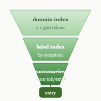
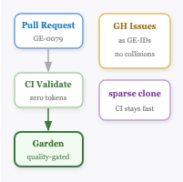
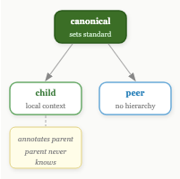
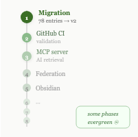

I came in to fix retrieval. We fixed it in an hour.
One file per entry instead of grouped domain files. A three-tier algorithm: if you know the technology, grep the domain index — under 1,500 tokens. If you know the symptom, check the label index. If you're genuinely lost, scan all summaries — bounded at roughly 30,000 tokens for 300 entries, regardless of garden size. A _summaries/ layer at ~100 tokens per entry sits between the index and the full content. Claude reaches the right entry in three tool calls.
Then we didn't stop.
The GitHub backend

The obvious next question: where does the garden live, and how do entries get reviewed? GitHub Issues as GE-IDs solved the concurrent-PR counter collision problem — two people submitting entries simultaneously can't create duplicate IDs. Sparse blobless clones keep the CI fast. GitHub Actions validate every PR before anything touches the garden — zero-token cost, no Claude involvement in the quality gate.
Federation

The team case forced the federation model. If someone on my team runs their own garden, how does knowledge flow between us without centralising everything?
Three relationship types emerged: canonical gardens set the editorial standard for a domain; child gardens enrich canonical entries with local context the parent never sees; peer gardens share entries across domains without hierarchy. A child can annotate a parent entry — "this applies differently in our setup" — without submitting a change upstream.
The Quarkus case made it concrete. A community Quarkus garden could sit alongside individual team gardens, all federated, each sovereign.
Nine phases

The roadmap came out of asking how far this could go. Nine phases, some explicitly labelled evergreen — never finished, just tended. Phase 1 is migration: 78 entries, v2 structure, one file each. Everything after that builds on a working foundation.
The spec
The document is 3,300 lines with 10 embedded diagrams. It exists. The garden doesn't yet.
Phase 1 is next.